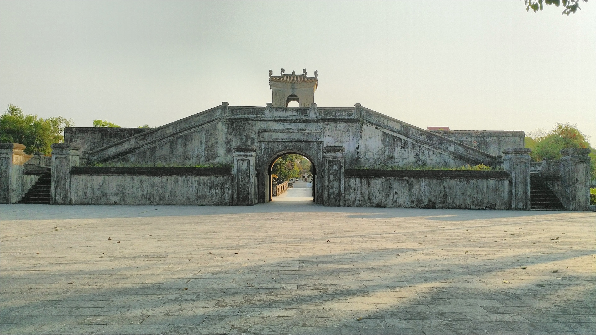
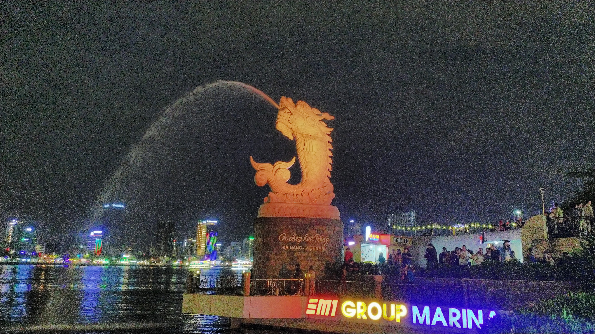
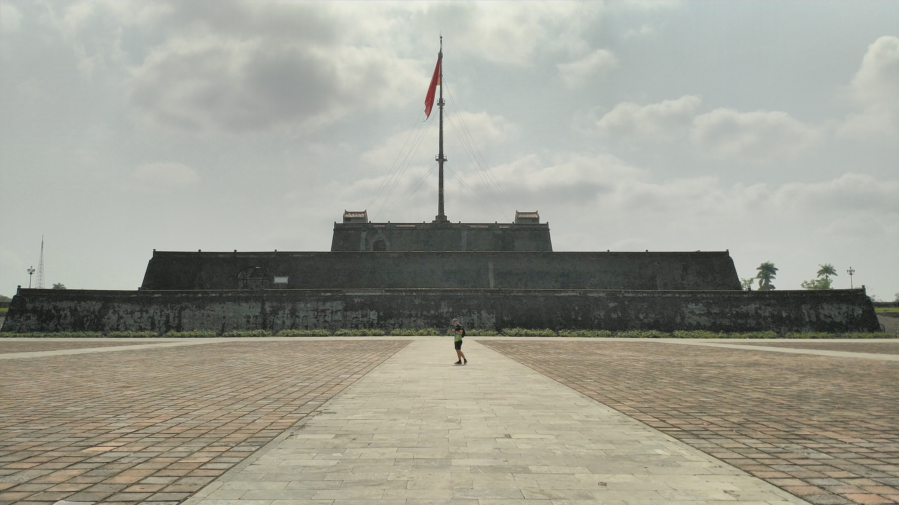
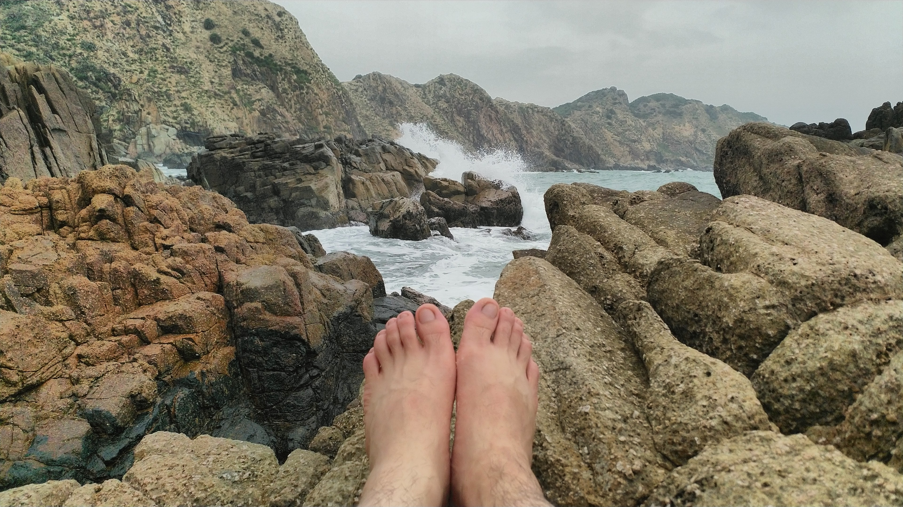
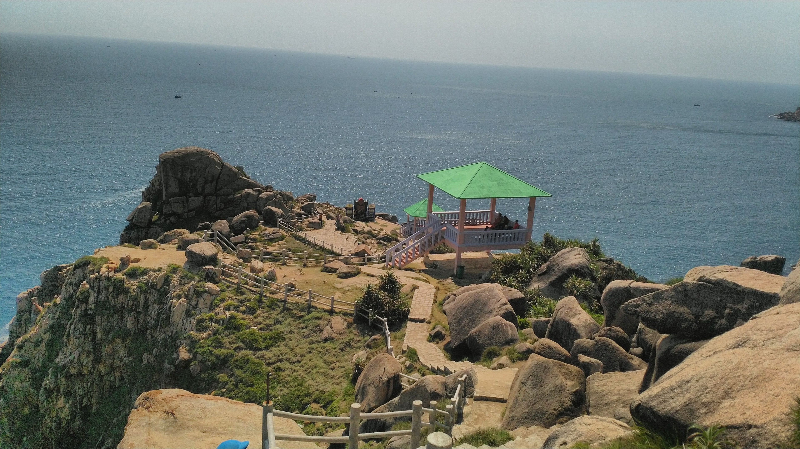

The Cuccu's Coner
Where stories are shared and listened
Home
About
Những nơi mà tôi đã từng đi qua

Địa danh:
Thành cổ Quảng Trị
Mô tả:
Thành cổ Quảng Trị hoặc Cổ thành Quảng Trị là một Di tích quốc gia đặc biệt của Việt Nam được xếp hạng đợt 4, tọa lạc ở trung tâm thị xã Quảng Trị, tỉnh Quảng Trị.

Địa danh:
Cá chép hóa rồng
Mô tả:
Cá chép hóa rồng được đặt tại bờ sông Hàn tại thành phố Đà Nẵng xinh đẹp.

Địa danh:
Cung đình Huế
Mô tả:
Cung đình Huế nơi đóng đô của triều đại nhà Nguyễn trong suốt 143 năm từ 1802 đến khi thoái vị vào năm 1945. Hiện nay, Kinh thành Huế là một trong số các di tích thuộc cụm Quần thể di tích Cố đô Huế được UNESCO công nhận là Di sản Văn hoá Thế giới.

Địa danh:
Eo gió
Mô tả:
Là một điểm du lịch nổi tiếng tọa lạc thành phố Quy Nhơn tỉnh Bình Định.

Địa danh:
Mũi Đại Lãnh
Mô tả:
Được coi là cực đông trên đất liền. Một số lần trong năm đây sẽ là nơi đón ánh nắng đầu tiên của Việt Nam.
Địa danh:
Thành phố Đà Lạt
Mô tả:
Là thành phố có khí hậu đẹp nhất Việt Nam. Một ngày ở đây chúng ta có thể trải nghiệm cả bốn mùa trong năm.